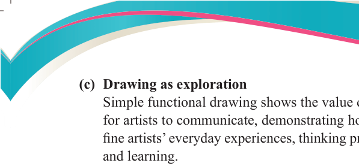
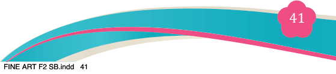
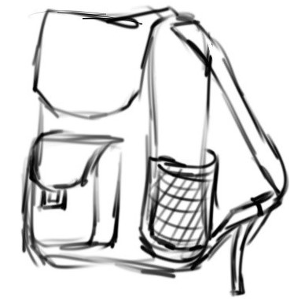

Fine Art for Secondary Schools

41


Student’s Book Form Two

(c) Drawing as exploration

Simple functional drawing shows the value of drawing as a meaningful way for artists to communicate, demonstrating how this type of art is linked with
fine artists’ everyday experiences, thinking processes, imagination, emotions,
and learning.
It helps an artist to produce an alternatives idea, such as exploring more and different compositions of the same design such as a cup or anything else.
(d) Problem Solving
Simple functional drawings help in designing and improving products or
structures before they are built.
(e) Education and Instruction
Simple functional drawings are used in textbooks, manuals, and training guides
to educate and instruct. An example of a functional drawing’s instructional
goal is when instructing students on reproductions with an illustration or how
to draw a certain object.
Procedures for creating simple functional drawings
The following steps are applicable.
Step 1: Research and concept development
Observe and analyse different types of objects, for example school bags to understand their shapes, compartments, and materials. Also identify
the essential features of your school bag, such as pockets, straps, zippers,
and padding. Sketch a rough idea before proceeding to detailed drawing.
Figure 3.7 shows a sketch of a school bag.

Figure 3.7: Sketch of a school bag
04/08/2025 13:54